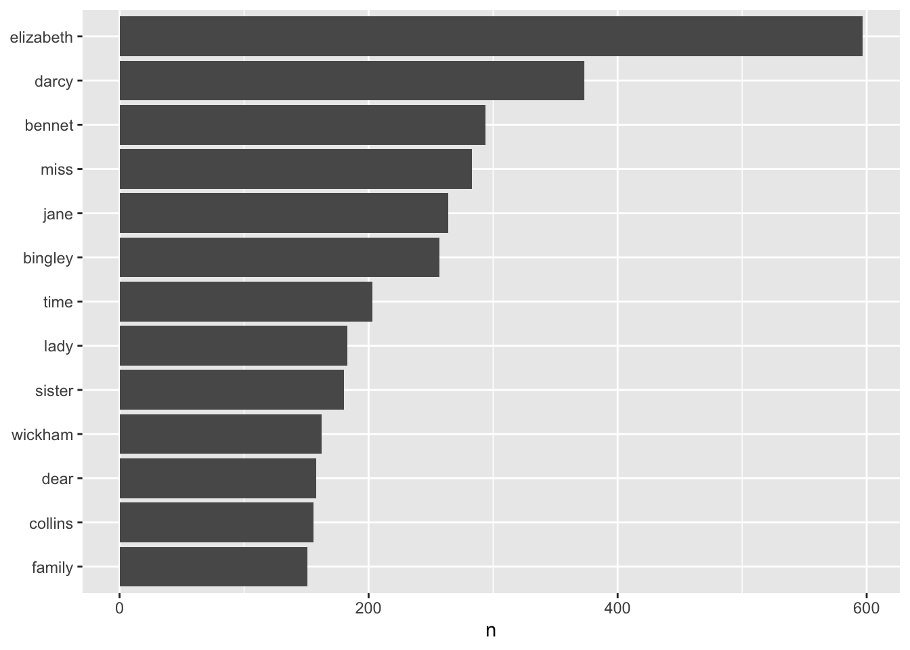
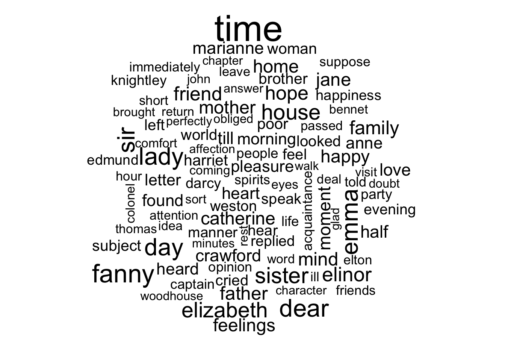

This lecture, as the rest of the course, is adapted from the version Stephanie C. Hicks designed and maintained in 2021 and 2022. Check the recent changes to this file through the GitHub history.
Pre-lecture materials
Acknowledgements
Material for this lecture was borrowed and adopted from
- Text mining with R: A Tidy Approach from Julia Silge and David Robinson which uses the
tidytextR package - Supervised Machine Learning for Text Analsyis in R from Emil Hvitfeldt, Julia Silge
- You might find this text sentiment analysis by David Robinson interesting as an example use case of the tools we will learn today: http://varianceexplained.org/r/trump-tweets/
Learning objectives
NoteLearning objectives
At the end of this lesson you will:
- Learn about what is is meant by “tidy text” data
- Know the fundamentals of the
tidytextR package to create tidy text data - Know the fundamentals of sentiment analysis
Motivation
Analyzing text data such as Twitter content, books or news articles is commonly performed in data science.
In this lecture, we will be asking the following questions:
- Which are the most commonly used words from Jane Austen’s novels?
- Which are the most positive or negative words?
- How does the sentiment (e.g. positive vs negative) of the text change across each novel?

To answer these questions, we will need to learn about a few things. Specifically,
- How to convert words in documents to a tidy text format using the
tidytextR package. - A little bit about sentiment analysis.
Tidy text
In previous lectures, you have learned about the tidy data principles and the tidyverse R packages as a way to make handling data easier and more effective.
These packages depend on data being formatted in a particular way.
The idea with tidy text is to treat text as data frames of individual words and apply the same tidy data principles to make text mining tasks easier and consistent with already developed tools.
First let’s recall what a tidy data format means.
What is a tidy format?
First, the tidyverse is
“an opinionated collection of R packages designed for data science. All packages share an underlying philosophy and common APIs.”
Another way of putting it is that it is a set of packages that are useful specifically for data manipulation, exploration and visualization with a common philosophy.
What is this common philosphy?
The common philosophy is called “tidy” data.
It is a standard way of mapping the meaning of a dataset to its structure.
In tidy data:
- Each variable forms a column.
- Each observation forms a row.
- Each type of observational unit forms a table.
Working with tidy data is useful because it creates a structured way of organizing data values within a data set.
This makes the data analysis process more efficient and simplifies the development of data analysis tools that work together.
In this way, you can focus on the problem you are investigating, rather than the uninteresting logistics of data.
What is a tidy text format?
When dealing with text data, the tidy text format is defined as a table with one-token-per-row, where a token is a meaningful unit of text (e.g. a word, pair of words, sentence, paragraph, etc).
Using a given set of token, we can tokenize text, or split the text into the defined tokens of interest along the rows.
We will learn more about how to do this using functions in the tidytext R package.
In contrast, other data structures that are commonly used to store text data in text mining applications:
- string: text can, of course, be stored as strings, i.e., character vectors, within R, and often text data is first read into memory in this form.
- corpus: these types of objects typically contain raw strings annotated with additional metadata and details.
- document-term matrix: This is a sparse matrix describing a collection (i.e., a corpus) of documents with one row for each document and one column for each term. The value in the matrix is typically word count.
I won’t describing these other formats in greater detail, but encourage you to read about them if interested in this topic.
Why is this format useful?
One of the biggest advantages of transforming text data to the tidy text format is that it allows data to transition smoothly between other packages that adhere to the tidyverse framework (e.g. ggplot2, dplyr, etc).

In addition, a user can transition between the tidy text format for e.g data visualization with ggplot2, but then also convert data to other data structures (e.g. document-term matrix) that is commonly used in machine learning applications.
How does it work?
The main workhorse function in the tidytext R package to tokenize text a data frame is the unnest_tokens(tbl, output, input) function.
?unnest_tokensIn addition to the tibble or data frame (tbl), the function needs two basic arguments:
outputor the output column name that will be created (e.g. string) as the text is unnested into itinputor input column name that the text comes from and gets split
Let’s try out the unnest_tokens() function using the first paragraph in the preface of Roger Peng’s R Programming for Data Science book.
To make this easier, I typed this text into a vector of character strings: one string per sentence.
peng_preface <-
c(
"I started using R in 1998 when I was a college undergraduate working on my senior thesis.",
"The version was 0.63.",
"I was an applied mathematics major with a statistics concentration and I was working with Dr. Nicolas Hengartner on an analysis of word frequencies in classic texts (Shakespeare, Milton, etc.).",
"The idea was to see if we could identify the authorship of each of the texts based on how frequently they used certain words.",
"We downloaded the data from Project Gutenberg and used some basic linear discriminant analysis for the modeling.",
"The work was eventually published and was my first ever peer-reviewed publication.",
"I guess you could argue it was my first real 'data science' experience."
)
peng_preface[1] "I started using R in 1998 when I was a college undergraduate working on my senior thesis."
[2] "The version was 0.63."
[3] "I was an applied mathematics major with a statistics concentration and I was working with Dr. Nicolas Hengartner on an analysis of word frequencies in classic texts (Shakespeare, Milton, etc.)."
[4] "The idea was to see if we could identify the authorship of each of the texts based on how frequently they used certain words."
[5] "We downloaded the data from Project Gutenberg and used some basic linear discriminant analysis for the modeling."
[6] "The work was eventually published and was my first ever peer-reviewed publication."
[7] "I guess you could argue it was my first real 'data science' experience." Turns out Roger performed a similar analysis as an undergraduate student!
He goes to say that back then no one was using R (but a little bit of something called S-PLUS), so I can only imagine how different it was to accomplish a task like the one we are going to do today compared to when he was an undergraduate.
Next, we load a few R packages
library(tidyverse)
library(stringr)
library(tidytext) ## needs to be installed
library(janeaustenr) ## needs to be installedThen, we use the tibble() function to construct a data frame with two columns: one counting the line number and one from the character strings in peng_preface.
peng_preface_df <- tibble(
line = 1:7,
text = peng_preface
)
peng_preface_df# A tibble: 7 × 2
line text
<int> <chr>
1 1 I started using R in 1998 when I was a college undergraduate working on…
2 2 The version was 0.63.
3 3 I was an applied mathematics major with a statistics concentration and …
4 4 The idea was to see if we could identify the authorship of each of the …
5 5 We downloaded the data from Project Gutenberg and used some basic linea…
6 6 The work was eventually published and was my first ever peer-reviewed p…
7 7 I guess you could argue it was my first real 'data science' experience. Text Mining and Tokens
Next, we will use the unnest_tokens() function where we will call the output column to be created word and the input column text from the peng_preface_df.
peng_token <-
peng_preface_df %>%
unnest_tokens(
output = word,
input = text,
token = "words"
)
peng_token %>%
head()# A tibble: 6 × 2
line word
<int> <chr>
1 1 i
2 1 started
3 1 using
4 1 r
5 1 in
6 1 1998 peng_token %>%
tail()# A tibble: 6 × 2
line word
<int> <chr>
1 7 my
2 7 first
3 7 real
4 7 data
5 7 science
6 7 experienceThe argument token="words" defines the unit for tokenization.
The default is "words", but there are lots of other options.
TipExample
We could tokenize by "characters":
peng_preface_df %>%
unnest_tokens(word,
text,
token = "characters"
) %>%
head()# A tibble: 6 × 2
line word
<int> <chr>
1 1 i
2 1 s
3 1 t
4 1 a
5 1 r
6 1 t or something called ngrams, which is defined by Wikipedia as a “contiguous sequence of n items from a given sample of text or speech”
peng_preface_df %>%
unnest_tokens(word,
text,
token = "ngrams",
n = 3
) %>%
head()# A tibble: 6 × 2
line word
<int> <chr>
1 1 i started using
2 1 started using r
3 1 using r in
4 1 r in 1998
5 1 in 1998 when
6 1 1998 when i Another option is to use the character_shingles option, which is similar to tokenizing like ngrams, except the units are characters instead of words.
peng_preface_df %>%
unnest_tokens(word,
text,
token = "character_shingles",
n = 4
) %>%
head()# A tibble: 6 × 2
line word
<int> <chr>
1 1 ista
2 1 star
3 1 tart
4 1 arte
5 1 rted
6 1 tedu You can also create custom functions for tokenization.
peng_preface_df %>%
unnest_tokens(word,
text,
token = stringr::str_split,
pattern = " "
) %>%
head()# A tibble: 6 × 2
line word
<int> <chr>
1 1 i
2 1 started
3 1 using
4 1 r
5 1 in
6 1 1998
NoteQuestion
Let’s tokenize the first four sentences of Amanda Gorman’s The Hill We Climb by words.
gorman_hill_we_climb <-
c(
"When day comes we ask ourselves, where can we find light in this neverending shade?",
"The loss we carry, a sea we must wade.",
"We’ve braved the belly of the beast, we’ve learned that quiet isn’t always peace and the norms and notions of what just is, isn’t always justice.",
"And yet the dawn is ours before we knew it, somehow we do it, somehow we’ve weathered and witnessed a nation that isn’t broken but simply unfinished."
)
hill_df <- tibble(
line = seq_along(gorman_hill_we_climb),
text = gorman_hill_we_climb
)
hill_df# A tibble: 4 × 2
line text
<int> <chr>
1 1 When day comes we ask ourselves, where can we find light in this nevere…
2 2 The loss we carry, a sea we must wade.
3 3 We’ve braved the belly of the beast, we’ve learned that quiet isn’t alw…
4 4 And yet the dawn is ours before we knew it, somehow we do it, somehow w…### try it out
hill_df %>%
unnest_tokens(
output = wordsforfun,
input = text,
token = "words"
)# A tibble: 77 × 2
line wordsforfun
<int> <chr>
1 1 when
2 1 day
3 1 comes
4 1 we
5 1 ask
6 1 ourselves
7 1 where
8 1 can
9 1 we
10 1 find
# ℹ 67 more rowsExample: text from works of Jane Austen
We will use the text from six published novels from Jane Austen, which are available in the janeaustenr R package. The authors describe the format:
“The package provides the text in a one-row-per-line format, where a line is this context is analogous to a literal printed line in a physical book.
The package contains:
sensesensibility: Sense and Sensibility, published in 1811prideprejudice: Pride and Prejudice, published in 1813mansfieldpark: Mansfield Park, published in 1814emma: Emma, published in 1815northangerabbey: Northanger Abbey, published posthumously in 1818persuasion: Persuasion, also published posthumously in 1818There is also a function
austen_books()that returns a tidy data frame of all 6 novels.”
Let’s load in the text from prideprejudice and look at how the data are stored.
library(janeaustenr)
head(prideprejudice, 20) [1] "PRIDE AND PREJUDICE"
[2] ""
[3] "By Jane Austen"
[4] ""
[5] ""
[6] ""
[7] "Chapter 1"
[8] ""
[9] ""
[10] "It is a truth universally acknowledged, that a single man in possession"
[11] "of a good fortune, must be in want of a wife."
[12] ""
[13] "However little known the feelings or views of such a man may be on his"
[14] "first entering a neighbourhood, this truth is so well fixed in the minds"
[15] "of the surrounding families, that he is considered the rightful property"
[16] "of some one or other of their daughters."
[17] ""
[18] "\"My dear Mr. Bennet,\" said his lady to him one day, \"have you heard that"
[19] "Netherfield Park is let at last?\""
[20] "" We see each line is in a character vector with elements of about 70 characters.
Similar to what we did above with Roger’s preface, we can
- Turn the text of character strings into a data frame and then
- Convert it into a one-row-per-line dataframe using the
unnest_tokens()function
pp_book_df <- tibble(text = prideprejudice)
pp_book_df %>%
unnest_tokens(
output = word,
input = text,
token = "words"
)# A tibble: 122,204 × 1
word
<chr>
1 pride
2 and
3 prejudice
4 by
5 jane
6 austen
7 chapter
8 1
9 it
10 is
# ℹ 122,194 more rowsWe can also divide it by paragraphs:
tmp <- pp_book_df %>%
unnest_tokens(
output = paragraph,
input = text,
token = "paragraphs"
)
tmp# A tibble: 10,721 × 1
paragraph
<chr>
1 "pride and prejudice"
2 "by jane austen"
3 "chapter 1"
4 "it is a truth universally acknowledged, that a single man in possession"
5 "of a good fortune, must be in want of a wife."
6 "however little known the feelings or views of such a man may be on his"
7 "first entering a neighbourhood, this truth is so well fixed in the minds"
8 "of the surrounding families, that he is considered the rightful property"
9 "of some one or other of their daughters."
10 "\"my dear mr. bennet,\" said his lady to him one day, \"have you heard that"
# ℹ 10,711 more rowsWe can extract a particular element from the tibble
tmp[3, 1]# A tibble: 1 × 1
paragraph
<chr>
1 chapter 1
TipNote
What you name the output column, e.g. paragraph in this case, doesn’t affect it, it’s just good to give it a consistent name.
We could also divide it by sentence:
pp_book_df %>%
unnest_tokens(
output = sentence,
input = text,
token = "sentences"
)# A tibble: 15,545 × 1
sentence
<chr>
1 "pride and prejudice"
2 "by jane austen"
3 "chapter 1"
4 "it is a truth universally acknowledged, that a single man in possession"
5 "of a good fortune, must be in want of a wife."
6 "however little known the feelings or views of such a man may be on his"
7 "first entering a neighbourhood, this truth is so well fixed in the minds"
8 "of the surrounding families, that he is considered the rightful property"
9 "of some one or other of their daughters."
10 "\"my dear mr."
# ℹ 15,535 more rows
TipNote
This is tricked by terms like “Mr.” and “Mrs.”
One neat trick is that we can unnest by two layers:
- paragraph and then
- word
This lets us keep track of which paragraph is which.
paragraphs <-
pp_book_df %>%
unnest_tokens(
output = paragraph,
input = text,
token = "paragraphs"
) %>%
mutate(paragraph_number = row_number())
paragraphs# A tibble: 10,721 × 2
paragraph paragraph_number
<chr> <int>
1 "pride and prejudice" 1
2 "by jane austen" 2
3 "chapter 1" 3
4 "it is a truth universally acknowledged, that a single man … 4
5 "of a good fortune, must be in want of a wife." 5
6 "however little known the feelings or views of such a man m… 6
7 "first entering a neighbourhood, this truth is so well fixe… 7
8 "of the surrounding families, that he is considered the rig… 8
9 "of some one or other of their daughters." 9
10 "\"my dear mr. bennet,\" said his lady to him one day, \"ha… 10
# ℹ 10,711 more rows
TipNote
We use mutate() to annotate a paragraph number quantity to keep track of paragraphs in the original format.
After tokenizing by paragraph, we can then tokenzie by word:
paragraphs %>%
unnest_tokens(
output = word,
input = paragraph
)# A tibble: 122,204 × 2
paragraph_number word
<int> <chr>
1 1 pride
2 1 and
3 1 prejudice
4 2 by
5 2 jane
6 2 austen
7 3 chapter
8 3 1
9 4 it
10 4 is
# ℹ 122,194 more rowsWe notice there are many what are called stop words (“the”, “of”, “to”, and so forth in English).
Often in text analysis, we will want to remove stop words because stop words are words that are not useful for an analysis.
data(stop_words)
table(stop_words$lexicon)
onix SMART snowball
404 571 174 stop_words %>%
head(n = 10)# A tibble: 10 × 2
word lexicon
<chr> <chr>
1 a SMART
2 a's SMART
3 able SMART
4 about SMART
5 above SMART
6 according SMART
7 accordingly SMART
8 across SMART
9 actually SMART
10 after SMART We can remove stop words (kept in the tidytext dataset stop_words) with an anti_join(x,y) (return all rows from x without a match in y).
words_by_paragraph <-
paragraphs %>%
unnest_tokens(
output = word,
input = paragraph
) %>%
anti_join(stop_words)Joining with `by = join_by(word)`words_by_paragraph# A tibble: 37,246 × 2
paragraph_number word
<int> <chr>
1 1 pride
2 1 prejudice
3 2 jane
4 2 austen
5 3 chapter
6 3 1
7 4 truth
8 4 universally
9 4 acknowledged
10 4 single
# ℹ 37,236 more rowsBecause we have stored our data in a tidy dataset, we can use tidyverse packages for exploratory data analysis.
For example, here we use dplyr’s count() function to find the most common words in the book
words_by_paragraph %>%
count(word, sort = TRUE) %>%
head()# A tibble: 6 × 2
word n
<chr> <int>
1 elizabeth 597
2 darcy 373
3 bennet 294
4 miss 283
5 jane 264
6 bingley 257Then use ggplot2 to plot the most commonly used words from the book.
words_by_paragraph %>%
count(word, sort = TRUE) %>%
filter(n > 150) %>%
mutate(word = fct_reorder(word, n)) %>%
ggplot(aes(word, n)) +
geom_col() +
xlab(NULL) +
coord_flip()
We can also do this for all of her books using the austen_books() object
austen_books() %>%
head()# A tibble: 6 × 2
text book
<chr> <fct>
1 "SENSE AND SENSIBILITY" Sense & Sensibility
2 "" Sense & Sensibility
3 "by Jane Austen" Sense & Sensibility
4 "" Sense & Sensibility
5 "(1811)" Sense & Sensibility
6 "" Sense & SensibilityWe can do some data wrangling that keep tracks of the line number and chapter (using a regex) to find where all the chapters are.
original_books <-
austen_books() %>%
group_by(book) %>%
mutate(
linenumber = row_number(),
chapter = cumsum(
str_detect(text,
pattern = regex(
pattern = "^chapter [\\divxlc]",
ignore_case = TRUE
)
)
)
) %>%
ungroup()
original_books# A tibble: 73,422 × 4
text book linenumber chapter
<chr> <fct> <int> <int>
1 "SENSE AND SENSIBILITY" Sense & Sensibility 1 0
2 "" Sense & Sensibility 2 0
3 "by Jane Austen" Sense & Sensibility 3 0
4 "" Sense & Sensibility 4 0
5 "(1811)" Sense & Sensibility 5 0
6 "" Sense & Sensibility 6 0
7 "" Sense & Sensibility 7 0
8 "" Sense & Sensibility 8 0
9 "" Sense & Sensibility 9 0
10 "CHAPTER 1" Sense & Sensibility 10 1
# ℹ 73,412 more rowsFinally, we can restructure it to a one-token-per-row format using the unnest_tokens() function and remove stop words using the anti_join() function in dplyr.
tidy_books <- original_books %>%
unnest_tokens(word, text) %>%
anti_join(stop_words)Joining with `by = join_by(word)`tidy_books# A tibble: 217,609 × 4
book linenumber chapter word
<fct> <int> <int> <chr>
1 Sense & Sensibility 1 0 sense
2 Sense & Sensibility 1 0 sensibility
3 Sense & Sensibility 3 0 jane
4 Sense & Sensibility 3 0 austen
5 Sense & Sensibility 5 0 1811
6 Sense & Sensibility 10 1 chapter
7 Sense & Sensibility 10 1 1
8 Sense & Sensibility 13 1 family
9 Sense & Sensibility 13 1 dashwood
10 Sense & Sensibility 13 1 settled
# ℹ 217,599 more rowsHere are the most commonly used words across all of Jane Austen’s books.
tidy_books %>%
count(word, sort = TRUE) %>%
filter(n > 600) %>%
mutate(word = fct_reorder(word, n)) %>%
ggplot(aes(word, n)) +
geom_col() +
xlab(NULL) +
coord_flip()
Sentiment Analysis
In the previous section, we explored the tidy text format and showed how we can calculate things such as word frequency.
Next, we are going to look at something called opinion mining or sentiment analysis. The tidytext authors write:
“When human readers approach a text, we use our understanding of the emotional intent of words to infer whether a section of text is positive or negative, or perhaps characterized by some other more nuanced emotion like surprise or disgust. We can use the tools of text mining to approach the emotional content of text programmatically, as shown in the figure below”

“One way to analyze the sentiment of a text is to consider the text as a combination of its individual words and the sentiment content of the whole text as the sum of the sentiment content of the individual words. This isn’t the only way to approach sentiment analysis, but it is an often-used approach, and an approach that naturally takes advantage of the tidy tool ecosystem.”
Let’s try using sentiment analysis on the Jane Austen books.
The sentiments dataset
Inside the tidytext package are several sentiment lexicons. A few things to note:
- The lexicons are based on unigrams (single words)
- The lexicons contain many English words and the words are assigned scores for positive/negative sentiment, and also possibly emotions like joy, anger, sadness, and so forth
You can use the get_sentiments() function to extract a specific lexicon.
The nrc lexicon categorizes words into multiple categories of positive, negative, anger, anticipation, disgust, fear, joy, sadness, surprise, and trust
get_sentiments("nrc")# A tibble: 13,872 × 2
word sentiment
<chr> <chr>
1 abacus trust
2 abandon fear
3 abandon negative
4 abandon sadness
5 abandoned anger
6 abandoned fear
7 abandoned negative
8 abandoned sadness
9 abandonment anger
10 abandonment fear
# ℹ 13,862 more rowsThe bing lexicon categorizes words in a binary fashion into positive and negative categories
get_sentiments("bing")# A tibble: 6,786 × 2
word sentiment
<chr> <chr>
1 2-faces negative
2 abnormal negative
3 abolish negative
4 abominable negative
5 abominably negative
6 abominate negative
7 abomination negative
8 abort negative
9 aborted negative
10 aborts negative
# ℹ 6,776 more rowsThe AFINN lexicon assigns words with a score that runs between -5 and 5, with negative scores indicating negative sentiment and positive scores indicating positive sentiment
get_sentiments("afinn")# A tibble: 2,477 × 2
word value
<chr> <dbl>
1 abandon -2
2 abandoned -2
3 abandons -2
4 abducted -2
5 abduction -2
6 abductions -2
7 abhor -3
8 abhorred -3
9 abhorrent -3
10 abhors -3
# ℹ 2,467 more rowsThe authors of the tidytext package note:
“How were these sentiment lexicons put together and validated? They were constructed via either crowdsourcing (using, for example, Amazon Mechanical Turk) or by the labor of one of the authors, and were validated using some combination of crowdsourcing again, restaurant or movie reviews, or Twitter data. Given this information, we may hesitate to apply these sentiment lexicons to styles of text dramatically different from what they were validated on, such as narrative fiction from 200 years ago. While it is true that using these sentiment lexicons with, for example, Jane Austen’s novels may give us less accurate results than with tweets sent by a contemporary writer, we still can measure the sentiment content for words that are shared across the lexicon and the text.”
Two other caveats:
“Not every English word is in the lexicons because many English words are pretty neutral. It is important to keep in mind that these methods do not take into account qualifiers before a word, such as in”no good” or “not true”; a lexicon-based method like this is based on unigrams only. For many kinds of text (like the narrative examples below), there are not sustained sections of sarcasm or negated text, so this is not an important effect.”
and
“One last caveat is that the size of the chunk of text that we use to add up unigram sentiment scores can have an effect on an analysis. A text the size of many paragraphs can often have positive and negative sentiment averaged out to about zero, while sentence-sized or paragraph-sized text often works better.”
Joining together tidy text data with lexicons
Now that we have our data in a tidy text format AND we have learned about different types of lexicons in application for sentiment analysis, we can join the words together using a join function.
TipExample
What are the most common joy words in the book Emma?
Here, we use the nrc lexicon and join the tidy_books dataset with the nrc_joy lexicon using the inner_join() function in dplyr.
nrc_joy <- get_sentiments("nrc") %>%
filter(sentiment == "joy")
tidy_books %>%
filter(book == "Emma") %>%
inner_join(nrc_joy) %>%
count(word, sort = TRUE)Joining with `by = join_by(word)`# A tibble: 297 × 2
word n
<chr> <int>
1 friend 166
2 hope 143
3 happy 125
4 love 117
5 deal 92
6 found 92
7 happiness 76
8 pretty 68
9 true 66
10 comfort 65
# ℹ 287 more rowsWe can do things like investigate how the sentiment of the text changes throughout each of Jane’s novels.
Here, we use the bing lexicon, find a sentiment score for each word, and then use inner_join().
tidy_books %>%
inner_join(get_sentiments("bing"))Joining with `by = join_by(word)`Warning in inner_join(., get_sentiments("bing")): Detected an unexpected many-to-many relationship between `x` and `y`.
ℹ Row 131015 of `x` matches multiple rows in `y`.
ℹ Row 5051 of `y` matches multiple rows in `x`.
ℹ If a many-to-many relationship is expected, set `relationship =
"many-to-many"` to silence this warning.# A tibble: 44,171 × 5
book linenumber chapter word sentiment
<fct> <int> <int> <chr> <chr>
1 Sense & Sensibility 16 1 respectable positive
2 Sense & Sensibility 18 1 advanced positive
3 Sense & Sensibility 20 1 death negative
4 Sense & Sensibility 21 1 loss negative
5 Sense & Sensibility 25 1 comfortably positive
6 Sense & Sensibility 28 1 goodness positive
7 Sense & Sensibility 28 1 solid positive
8 Sense & Sensibility 29 1 comfort positive
9 Sense & Sensibility 30 1 relish positive
10 Sense & Sensibility 33 1 steady positive
# ℹ 44,161 more rowsThen, we can count how many positive and negative words there are in each section of the books.
We create an index to help us keep track of where we are in the narrative, which uses integer division, and counts up sections of 80 lines of text.
tidy_books %>%
inner_join(get_sentiments("bing")) %>%
count(book,
index = linenumber %/% 80,
sentiment
)Joining with `by = join_by(word)`Warning in inner_join(., get_sentiments("bing")): Detected an unexpected many-to-many relationship between `x` and `y`.
ℹ Row 131015 of `x` matches multiple rows in `y`.
ℹ Row 5051 of `y` matches multiple rows in `x`.
ℹ If a many-to-many relationship is expected, set `relationship =
"many-to-many"` to silence this warning.# A tibble: 1,840 × 4
book index sentiment n
<fct> <dbl> <chr> <int>
1 Sense & Sensibility 0 negative 16
2 Sense & Sensibility 0 positive 26
3 Sense & Sensibility 1 negative 19
4 Sense & Sensibility 1 positive 44
5 Sense & Sensibility 2 negative 12
6 Sense & Sensibility 2 positive 23
7 Sense & Sensibility 3 negative 15
8 Sense & Sensibility 3 positive 22
9 Sense & Sensibility 4 negative 16
10 Sense & Sensibility 4 positive 29
# ℹ 1,830 more rows
TipNote
The %/% operator does integer division (x %/% y is equivalent to floor(x/y)) so the index keeps track of which 80-line section of text we are counting up negative and positive sentiment in.
Finally, we use pivot_wider() to have positive and negative counts in different columns, and then use mutate() to calculate a net sentiment (positive - negative).
jane_austen_sentiment <-
tidy_books %>%
inner_join(get_sentiments("bing")) %>%
count(book,
index = linenumber %/% 80,
sentiment
) %>%
pivot_wider(
names_from = sentiment,
values_from = n,
values_fill = 0
) %>%
mutate(sentiment = positive - negative)Joining with `by = join_by(word)`Warning in inner_join(., get_sentiments("bing")): Detected an unexpected many-to-many relationship between `x` and `y`.
ℹ Row 131015 of `x` matches multiple rows in `y`.
ℹ Row 5051 of `y` matches multiple rows in `x`.
ℹ If a many-to-many relationship is expected, set `relationship =
"many-to-many"` to silence this warning.jane_austen_sentiment# A tibble: 920 × 5
book index negative positive sentiment
<fct> <dbl> <int> <int> <int>
1 Sense & Sensibility 0 16 26 10
2 Sense & Sensibility 1 19 44 25
3 Sense & Sensibility 2 12 23 11
4 Sense & Sensibility 3 15 22 7
5 Sense & Sensibility 4 16 29 13
6 Sense & Sensibility 5 16 39 23
7 Sense & Sensibility 6 24 37 13
8 Sense & Sensibility 7 22 39 17
9 Sense & Sensibility 8 30 35 5
10 Sense & Sensibility 9 14 18 4
# ℹ 910 more rowsThen we can plot the sentiment scores across the sections of each novel:
jane_austen_sentiment %>%
ggplot(aes(x = index, y = sentiment, fill = book)) +
geom_col(show.legend = FALSE) +
facet_wrap(. ~ book, ncol = 2, scales = "free_x")We can see how the sentiment trajectory of the novel changes over time.
Word clouds
You can also do things like create word clouds using the wordcloud package.
library(wordcloud)Loading required package: RColorBrewertidy_books %>%
anti_join(stop_words) %>%
count(word) %>%
with(wordcloud(word, n, max.words = 100))Joining with `by = join_by(word)`Warning in wordcloud(word, n, max.words = 100): miss could not be fit on page.
It will not be plotted.
Converting to and from tidy and non-tidy formats
In this section, we want to convert our tidy text data constructed with the unnest_tokens() function (useable by packages in the tidyverse) into a different format that can be used by packages for natural language processing or other types of machine learning algorithms in non-tidy formats.
In the figure below, we see how an analysis might switch between tidy and non-tidy data structures and tools.

tm or quanteda packages. Here, we show how to convert back and forth between document-term matrices and tidy data frames, as well as converting from a Corpus object to a text data frame.Click here for how to convert to and from tidy and non-tidy formats to build machine learning algorithms.
To introduce some of these tools, we first need to introduce document-term matrices, as well as casting a tidy data frame into a sparse matrix.
Document-term matrix
One of the most common structures that text mining packages work with is the document-term matrix (or DTM). This is a matrix where:
- each row represents one document (such as a book or article),
- each column represents one term, and
- each value (typically) contains the number of appearances of that term in that document.
Since most pairings of document and term do not occur (they have the value zero), DTMs are usually implemented as sparse matrices.
These objects can be treated as though they were matrices (for example, accessing particular rows and columns), but are stored in a more efficient format.
DTM objects cannot be used directly with tidy tools, just as tidy data frames cannot be used as input for most text mining packages. Thus, the tidytext package provides two verbs that convert between the two formats.
tidy()turns a document-term matrix into a tidy data frame. This verb comes from thebroompackage, which provides similar tidying functions for many statistical models and objects.cast()turns a tidy one-term-per-row data frame into a matrix.tidytextprovides three variations of this verb, each converting to a different type of matrix:cast_sparse()(converting to a sparse matrix from theMatrixpackage),cast_dtm()(converting to aDocumentTermMatrixobject fromtm), andcast_dfm()(converting to adfmobject fromquanteda).
A DTM is typically comparable to a tidy data frame after a count or a group_by/summarize that contains counts or another statistic for each combination of a term and document.
Creating DocumentTermMatrix objects
Perhaps the most widely used implementation of DTMs in R is the DocumentTermMatrix class in the tm package. Many available text mining datasets are provided in this format.
Let’s create a sparse with cast_sparse() function and then a dtm with the cast_dtm() function:
tidy_austen <-
austen_books() %>%
mutate(line = row_number()) %>%
unnest_tokens(word, text) %>%
anti_join(stop_words)Joining with `by = join_by(word)`tidy_austen# A tibble: 217,609 × 3
book line word
<fct> <int> <chr>
1 Sense & Sensibility 1 sense
2 Sense & Sensibility 1 sensibility
3 Sense & Sensibility 3 jane
4 Sense & Sensibility 3 austen
5 Sense & Sensibility 5 1811
6 Sense & Sensibility 10 chapter
7 Sense & Sensibility 10 1
8 Sense & Sensibility 13 family
9 Sense & Sensibility 13 dashwood
10 Sense & Sensibility 13 settled
# ℹ 217,599 more rowsFirst, we’ll make a sparse matrix with cast_sparse(data, row, column, value):
austen_sparse <- tidy_austen %>%
count(line, word) %>%
cast_sparse(row = line, column = word, value = n)
austen_sparse[1:10, 1:10]10 x 10 sparse Matrix of class "dgCMatrix" [[ suppressing 10 column names 'sense', 'sensibility', 'austen' ... ]]
1 1 1 . . . . . . . .
3 . . 1 1 . . . . . .
5 . . . . 1 . . . . .
10 . . . . . 1 1 . . .
13 . . . . . . . 1 1 1
14 . . . . . . . . . .
15 . . . . . . . . . .
16 . . . . . . . . . .
17 . . . . . . . . 1 .
18 . . . . . . . . . .Next, we’ll make a dtm object with cast_dtm(data, document, matrix):
austen_dtm <- tidy_austen %>%
count(line, word) %>%
cast_dtm(document = line, term = word, value = n)
austen_dtm<<DocumentTermMatrix (documents: 61010, terms: 13914)>>
Non-/sparse entries: 216128/848677012
Sparsity : 100%
Maximal term length: 19
Weighting : term frequency (tf)class(austen_dtm)[1] "DocumentTermMatrix" "simple_triplet_matrix"dim(austen_dtm)[1] 61010 13914as.matrix(austen_dtm[1:20, 1:10]) Terms
Docs sense sensibility austen jane 1811 1 chapter dashwood estate family
1 1 1 0 0 0 0 0 0 0 0
3 0 0 1 1 0 0 0 0 0 0
5 0 0 0 0 1 0 0 0 0 0
10 0 0 0 0 0 1 1 0 0 0
13 0 0 0 0 0 0 0 1 1 1
14 0 0 0 0 0 0 0 0 0 0
15 0 0 0 0 0 0 0 0 0 0
16 0 0 0 0 0 0 0 0 0 0
17 0 0 0 0 0 0 0 0 1 0
18 0 0 0 0 0 0 0 0 0 0
19 0 0 0 0 0 0 0 0 0 0
20 0 0 0 0 0 0 0 0 0 0
21 0 0 0 0 0 0 0 0 0 0
22 0 0 0 0 0 0 0 1 0 1
23 0 0 0 0 0 0 0 0 1 0
24 0 0 0 0 0 0 0 0 0 0
25 0 0 0 0 0 0 0 0 0 0
26 0 0 0 0 0 0 0 0 0 0
27 0 0 0 0 0 0 0 1 0 0
28 0 0 0 0 0 0 0 0 0 0Now we have 61010 observations and 13914 features.
With these matricies, you can start to leverage the NLP methods and software. For example, in text mining, we often have collections of documents, such as blog posts or news articles, that we’d like to divide into natural groups so that we can understand them separately.
Topic modeling is a method for unsupervised classification of such documents, similar to clustering on numeric data, which finds natural groups of items even when we’re not sure what we are looking for.
Latent Dirichlet allocation (LDA) is a particularly popular method for fitting a topic model. It treats each document as a mixture of topics, and each topic as a mixture of words. This allows documents to “overlap” each other in terms of content, rather than being separated into discrete groups, in a way that mirrors typical use of natural language.
We can also perform supervised analyses to build a classifier to classify lines of text from our austen_sparse or austen_dtm objects.
R session information
options(width = 120)
sessioninfo::session_info()─ Session info ───────────────────────────────────────────────────────────────────────────────────────────────────────
setting value
version R version 4.3.1 (2023-06-16)
os macOS Ventura 13.6
system aarch64, darwin20
ui X11
language (EN)
collate en_US.UTF-8
ctype en_US.UTF-8
tz America/New_York
date 2023-10-12
pandoc 3.1.5 @ /opt/homebrew/bin/ (via rmarkdown)
─ Packages ───────────────────────────────────────────────────────────────────────────────────────────────────────────
package * version date (UTC) lib source
cli 3.6.1 2023-03-23 [1] CRAN (R 4.3.0)
colorout 1.3-0 2023-09-28 [1] Github (jalvesaq/colorout@8384882)
colorspace 2.1-0 2023-01-23 [1] CRAN (R 4.3.0)
digest 0.6.33 2023-07-07 [1] CRAN (R 4.3.0)
dplyr * 1.1.3 2023-09-03 [1] CRAN (R 4.3.0)
evaluate 0.21 2023-05-05 [1] CRAN (R 4.3.0)
fansi 1.0.4 2023-01-22 [1] CRAN (R 4.3.0)
farver 2.1.1 2022-07-06 [1] CRAN (R 4.3.0)
fastmap 1.1.1 2023-02-24 [1] CRAN (R 4.3.0)
forcats * 1.0.0 2023-01-29 [1] CRAN (R 4.3.0)
fs 1.6.3 2023-07-20 [1] CRAN (R 4.3.0)
generics 0.1.3 2022-07-05 [1] CRAN (R 4.3.0)
ggplot2 * 3.4.3 2023-08-14 [1] CRAN (R 4.3.0)
glue 1.6.2 2022-02-24 [1] CRAN (R 4.3.0)
gtable 0.3.4 2023-08-21 [1] CRAN (R 4.3.0)
hms 1.1.3 2023-03-21 [1] CRAN (R 4.3.0)
htmltools 0.5.6 2023-08-10 [1] CRAN (R 4.3.0)
htmlwidgets 1.6.2 2023-03-17 [1] CRAN (R 4.3.0)
janeaustenr * 1.0.0 2022-08-26 [1] CRAN (R 4.3.0)
jsonlite 1.8.7 2023-06-29 [1] CRAN (R 4.3.0)
knitr 1.44 2023-09-11 [1] CRAN (R 4.3.0)
labeling 0.4.3 2023-08-29 [1] CRAN (R 4.3.0)
lattice 0.21-8 2023-04-05 [1] CRAN (R 4.3.1)
lifecycle 1.0.3 2022-10-07 [1] CRAN (R 4.3.0)
lubridate * 1.9.2 2023-02-10 [1] CRAN (R 4.3.0)
magrittr 2.0.3 2022-03-30 [1] CRAN (R 4.3.0)
Matrix 1.6-1 2023-08-14 [1] CRAN (R 4.3.0)
munsell 0.5.0 2018-06-12 [1] CRAN (R 4.3.0)
NLP 0.2-1 2020-10-14 [1] CRAN (R 4.3.0)
pillar 1.9.0 2023-03-22 [1] CRAN (R 4.3.0)
pkgconfig 2.0.3 2019-09-22 [1] CRAN (R 4.3.0)
purrr * 1.0.2 2023-08-10 [1] CRAN (R 4.3.0)
R6 2.5.1 2021-08-19 [1] CRAN (R 4.3.0)
rappdirs 0.3.3 2021-01-31 [1] CRAN (R 4.3.0)
RColorBrewer * 1.1-3 2022-04-03 [1] CRAN (R 4.3.0)
Rcpp 1.0.11 2023-07-06 [1] CRAN (R 4.3.0)
readr * 2.1.4 2023-02-10 [1] CRAN (R 4.3.0)
rlang 1.1.1 2023-04-28 [1] CRAN (R 4.3.0)
rmarkdown 2.24 2023-08-14 [1] CRAN (R 4.3.1)
rstudioapi 0.15.0 2023-07-07 [1] CRAN (R 4.3.0)
scales 1.2.1 2022-08-20 [1] CRAN (R 4.3.0)
sessioninfo 1.2.2 2021-12-06 [1] CRAN (R 4.3.0)
slam 0.1-50 2022-01-08 [1] CRAN (R 4.3.0)
SnowballC 0.7.1 2023-04-25 [1] CRAN (R 4.3.0)
stringi 1.7.12 2023-01-11 [1] CRAN (R 4.3.0)
stringr * 1.5.0 2022-12-02 [1] CRAN (R 4.3.0)
textdata 0.4.4 2022-09-02 [1] CRAN (R 4.3.0)
tibble * 3.2.1 2023-03-20 [1] CRAN (R 4.3.0)
tidyr * 1.3.0 2023-01-24 [1] CRAN (R 4.3.0)
tidyselect 1.2.0 2022-10-10 [1] CRAN (R 4.3.0)
tidytext * 0.4.1 2023-01-07 [1] CRAN (R 4.3.0)
tidyverse * 2.0.0 2023-02-22 [1] CRAN (R 4.3.0)
timechange 0.2.0 2023-01-11 [1] CRAN (R 4.3.0)
tm 0.7-11 2023-02-05 [1] CRAN (R 4.3.0)
tokenizers 0.3.0 2022-12-22 [1] CRAN (R 4.3.0)
tzdb 0.4.0 2023-05-12 [1] CRAN (R 4.3.0)
utf8 1.2.3 2023-01-31 [1] CRAN (R 4.3.0)
vctrs 0.6.3 2023-06-14 [1] CRAN (R 4.3.0)
withr 2.5.0 2022-03-03 [1] CRAN (R 4.3.0)
wordcloud * 2.6 2018-08-24 [1] CRAN (R 4.3.0)
xfun 0.40 2023-08-09 [1] CRAN (R 4.3.0)
xml2 1.3.5 2023-07-06 [1] CRAN (R 4.3.0)
yaml 2.3.7 2023-01-23 [1] CRAN (R 4.3.0)
[1] /Library/Frameworks/R.framework/Versions/4.3-arm64/Resources/library
──────────────────────────────────────────────────────────────────────────────────────────────────────────────────────